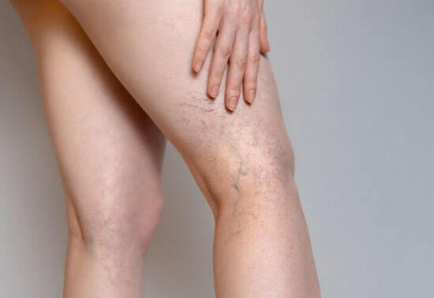
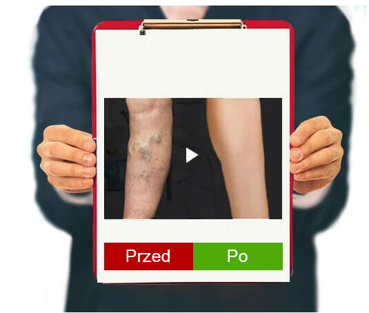
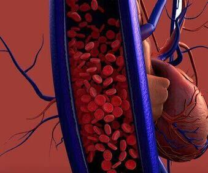

Traktuj swoje stopy ostrożnie i
powiedz "nie" żylakom
NIEZALEŻNE BADANIA
Cześć wszystkim! Dziewczyny, czy kiedykolwiek przyłapałyście się na
myśleniu, że współczujecie kobietom po czterdziestce, które ledwo chodzą
po chodniku i straszą wszystkich swoimi niebieskimi nogami? Podwójnie boję się
na nie patrzeć, ponieważ wiem z pierwszej ręki, że życie z żylakami jest bolesne!
Dlatego chcę podzielić się tym, jak raz na zawsze pozbyć się żylaków.
Na początek złe wiadomości: żylaki są najczęściej dziedziczne, a
jeśli ma je ktoś z rodziny, jesteś w niebezpieczeństwie. Teraz dobra wiadomość:
wiem, jak się ich pozbyć.
Tak wyglądały moje biodra w wieku 14 lat. Tak, kiedy byłam
nastolatkiem, zaczęłam zauważać, że moje nogi szybko "zmieniają kolor na
niebieski". Te okropne siateczki naczyniowe i niebieskie krzywe
rozszerzonych żył. Wstydziłam się swoich smukłych, wysportowanych nóg,
chowając je w dżinsach. Mama powiedziała, że to hormonalne i wkrótce minie.
Ale z każdym rokiem siatka naczyniowa stawała się coraz większa, aż objęła
wszystkie biodra.

Wiele osób uważa, że żylaki są tylko
problemem estetycznym i dlatego nie robią nic, aby powstrzymać postęp
choroby, zamiast tego ukrywają dotknięte obszary ciała pod ubraniem.
Zakrzepica Naczynia krwionośne są
rozszerzone i wyraźnie wystają pod skórę
Uszkodzenie
powierzchni skóry powoduje ciężkie
krwawienie
Wrzód troficzny występuje z powodu
problemów związanych z krążeniem i zaburzeniami
odżywiania tkanek.
Ale gdyby tylko to! W nocy bolały mnie nogi, drętwiały, były
opuchnięte i gorące. I tak dzień po dniu... Starałam się złagodzić sytuację jak
tylko mogłam. Codziennie robiłam kąpiele stóp, brałam środki wenotoniczne,
używałam specjalnych kremów, nosiłam pończochy uciskowe. Ale nic nie
pomogło. Nie mogłam patrzeć na swoje nogi. Moje żyły rosły z każdym dniem.
Po wielu nieudanych próbach radzenia sobie z żylakami
całkowicie straciłam nadzieję. Ale rozwiązanie przyszło stamtąd, skąd się go
najmniej spodziewano.
- NOWOCZESNE
ROZWIĄZANIE
Większość dotychczasowych produktów może jedynie
wyeliminować objawy żylaków, obrzęk i złagodzić ból.
W
PRZECIWIEŃSTWIE DO NICH,POSIADA SZEROKI ZAKRES
DZIAŁANIA
1. Pomaga
usunąć zapalenie naczyń i wyeliminować objawy towarzyszące.
2.
Wspomaga stymulację krążenia krwi i wzmacnia ściany naczyń
krwionośnych.
Byłam na wakacjach i poprosiłam nowego menedżera, aby przyniósł
raport z biura do mojego domu. Przypadkowo zauważyła moje nogi pod szlafrokiem i
powiedziała, że miesiąc temu kupiła mamie żel na żylaki, który
pomogły jej w zaledwie
2 tygodnie. Postanowiłam też wypróbować ten żel i zamówiłam go przez
Internet. Zamówienie dotarło dość szybko, w ciągu zaledwie 2 dni.
Ze względu na swoją konsystencję żel jest bardzo delikatny i ma
przyjemny zapach. Jest dość lekki, dobrze nakłada się na skórę. W końcu żel
wchłania się w 5 minut, nie pozostawiając lepkości i nie tworząc nieprzyjemnego
filmu.
Stosowałam
rano i wieczorem. Zużywa się oszczędnie, wystarczy cienka warstwa, aby uzyskać
efekt.
A efekt jest. Pierwsze uczucie-prawie natychmiast znika zmęczenie i
ciężkość nóg, taki efekt daje ekstrakt z wąkroty azjatyckiej (Centella
asiatica). Dosłownie na oczach znika obrzęk. Pojawia się uczucie świeżości, nogi
stają się jaśniejsze dzięki obecności kasztanowca.
Nie uwierzycie mi, ale następnego dnia poczułam przyjemną lekkość,
nogi nie puchły aż do wieczora. Wcześniej w pracy kostki natychmiast puchły, a
teraz nawet żyły nie są tak spuchnięte. Codziennie używałam żelu. I wiecie co?
Po kilku tygodniach zapomniałam o bólach nóg, a siatka naczyniowa się
rozjaśniła. Miesiąc później nie rozpoznałam swoich nóg. Z opuchniętych
żył praktycznie nic nie zostało. A czerwono-niebieska siatka na biodrach jakby
nie istniała. Nie spodziewałam się takiego wyniku. Okazał się, że jest
naprawdę dobrym, a
co najważniejsze niedrogim rozwiązaniem.
OCZYWISTY EFEKT
1.Pomaga poprawić stan
naczyń krwionośnych i przepływ krwi. wpływa na
mikrokrążenie w ciele, pomaga wzmocnić naczynia włosowate i
zmniejszyć ich przepuszczalność.
2.Pomaga usunąć
zapalenie ścian naczyń krwionośnych, naczynia
stają się znacznie mniej widoczne. Dzięki temu
przywracane jest krążenie krwi, a tym samym stymulowana jest
praca serca, mózgu i jelit.

PrzedPo
Naturalne ekstrakty zawarte w żelu pomagają poprawić krążenie krwi.
W ten sposób żel nie tylko pomaga wyeliminować niebieskawe żyły, ale także
zapobiegać pojawianiu się problemu w przyszłości. Przez miesiąc stosowania żelu
pozbyłam się wszystkich objawów żylaków. Nie potrafię wyrazić słowami,
jak bardzo cieszę się, że mogę podziwiać moje szczupłe i piękne nogi. To uczucie
jest nie do opisania! Po prostu oceńcie różnicę:
W końcu przestałam chować nogi pod długimi spódnicami oraz
spodniami i chętnie zakładam mini. A jeśli znasz uczucie ciężkości w nogach,
obrzęk, okropne wybrzuszone żyły i nie wiesz, jak się ich pozbyć, spróbuj
. To
jak pończochy
uciskowe, tylko lepsze. Traktuj swoje nogi ostrożnie, a na pewno Ci podziękują.
Efekt ,
KROK PO KROKU:
1.
POPRAWA KRĄŻENIA KRWI
Rozwojowi żylaków towarzyszy
zaburzenie krążenia krwi, które prowadzi do powstawania
zakrzepów. Zasadniczo krążenie krwi porusza się od dołu do
góry, od stóp do klatki piersiowej. W stagnacji
większość krwi pozostaje w kończynach dolnych. pomaga
normalizować krążenie krwi, zapobiegać tworzeniu się
skrzepów i zapewniać odżywienie naczyń.

2.WZMOCNIENIE STRUKTURY ŚCIAN ŻYLNYCH
W chorobach naczyniowych komórki
wewnętrznej warstwy naczyń osłabiają się, ściany stają się
cieńsze.
Składniki żelu
pomagają wzmocnić warstwę śródbłonka i uczynić naczynia
bardziej stabilnymi oraz elastycznymi. Żel ma pozytywny wpływ na
ściany żył.
3.
ELIMINACJA BÓLU I DYSKOMFORTU
Obrzęk i zapalenie żył, w których
zastój krwi i zakrzepowe skrzepy są niewątpliwie niewygodne
i zakłócają jakość życia.
Żel nie
tylko wpływa na przyczyny
bólu, co ma pozytywny długotrwały efekt, ale także przynosi
ulgę dzięki zawartości ekstraktów z kasztanowca, centelli,
myszopłochu.
Komentarze 10
Maria
To jest wynik! Nigdy bym nie pomyślała, że tylko jeden żel jest w
stanie tak zmienić nogi. 😊
Iwona
Ja też mam okropne żylaki, też zamówię ten żel, mam nadzieję,
że pomoże!
Krystyna
Pracuję jako kelnerka w kawiarni. Cały dzień spędzam na nogach, w
przeciwnym razie natychmiast zostanę ukarana grzywną. Po zmianie nogi puchną i bolą. A potem
pojawiają się węzły... Na początku, jak wszyscy, kupowałam w aptece różne kremy,
tabletki i zioła do kąpieli. Jednak nic nie pomogło. Wkrótce dowiedziałam się o . Jest
niedrogi i znacznie bardziej
wydajny niż wszystko, czego próbowałam. Nie sądzę, żebym mogła długo wytrzymać w tej
pracy, gdyby nie ten żel. Kiedyś nogi strasznie piekły, ale teraz wcale się nie męczę.
Różnica jest więcej niż namacalna!
Dorota
Czyżby tak skuteczny żel? Po prostu nie mogę w to uwierzyć...
Zuzanna
Ja też nie wierzyłam, dopóki nie spróbowałam. 3 lata temu
miałam problemy z nogami: obrzęk, obrzęk żył, pieczenie i ciężkość. Próbowałam
różnych rzeczy, myślałam, że nic nie pomoże. Ale ostatnio specjalista doradził mi nowy
środek, powiedział, że powinien pomóc. I po miesiącu uratował mnie od wszystkich
problemów. Zniknęła
ciężkość, obrzęk i wystające niebieskie żyły. Polecam!
Kamila
Co za wynik! też trzeba spróbować
Magda
Dowiedziałam się o tym żelu od przyjaciółki, ale jej nie
pomógł. Zamawiała w sklepie internetowym.
Aneta
Prawdopodobnie zamówiła podróbkę żelu. Sama cierpię na
żylaki od dawna i poważnie, z guzkami, spuchniętymi żyłami, a kiedy zaczęłam cierpieć na
obrzęk nóg, wypróbowałam ten żel! Od tego czasu jest moim stałym towarzyszem. W
drodze i w domu. Naprawdę pomaga bardzo szybko. Więc polecam, oryginalny wygląda tak.
Ewelina
Dziękuję bardzo za komentarze. Żyły przeszkadzały mi od lat, na
pewno spróbuję tego żelu.
Katarzyna
20.12.2022
Używam tylko
tydzień, a nogi mniej puchną w ciągu dnia i przestały boleć podczas chodzenia. Nawet siatka
naczyń stała się mniej zauważalna. Mam nadzieję, że wkrótce zapomnę o żylakach, jak o
strasznym śnie.


 40
40
Komentarze 10
PIĘKNE NOGI SĄ TERAZ RZECZYWISTOŚCIĄ